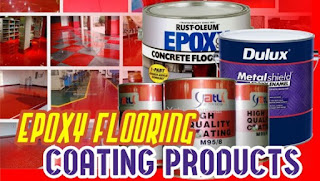

Apa kelebihan cat epoxy dan mortar epoxy? Kami perusahaan konstraktor pelaksanaan aplikator epoxy lantai, akan menjelaskannya untuk Anda. Semua orang pasti menginginkan rumah yang tidak hanya baik secara tata letaknyanya tapi juga bagus secara keseluruhan baik itu dari design interior maupun eksteriornya.
Untuk mewujudkan bangunan cita-cita, tentunya dibutuhkan pemikiran serta perencanaan yang matang yang melputi banyak hal seperti design bangunan, tata lokasinya yang disesuaikan dengan fungsinya, design interior dan eksteriornya dan malah hal – hal rinci seperti warna cat dan juga lantainya. Karena seperti ini perlu direncanakan jauh – jauh hari agar saat diawali progres pengerjaannya, kita hanya tinggal memakai dan melaksanakan layak dengan apa yang telah direncanakan. Salah satu komponen rumah yang cukup menjadi pertimbangan ialah lantai. Lantai memang cukup menyita perhatian karena mengingat lantai yaitu item interior yang dapat dikatakan termasuk ke dalam point of interest dari suatu bangunan.
Untuk mewujudkan lantai yang menawan dan mengkilap sesuai dengan kemauan anda, tentunya anda memerlukan bantuan dari para ahli yang memang spesialis di bidangnya. Salah satu solusinya merupakan dengan memakai jasa kami kontraktor epoxy lantai Kepulauan Seribu yang mana akan membantu untuk menciptakan keinginan anda dengan menerapkan Jual Cat Epoxy di Kepulauan Seribu yang dapat menolong mempercantik lantai cita-cita anda. Berikut penjelasannya.
Pengertian Cat Epoxy

Cat epoxy ini sendiri merupakan cat dimana memiliki kualitas yang bagus, mempunyai bahan dasar resin serta polimed.
Kelebihan Cat Epoxy dan Mortar Epoxy
Resin dan polimed ini mempunyai kelebihan yakni sanggup menciptakan suatu senyawa yang mana bisa membuat merekat dengan kuat pada lapisan bagian atas lantai beton. Kecuali itu, cat epoxy juga mempunyai beberapa fungsi, antara lain :
- Melindungi lantai dari goresan
- Melindungi lantai dari suatu benturan benda yang keras
- Memberikan efek yang indah serta mengkilap pada lantai
- Menciptakan lantai nampak menarik dan juga tampak mewah
Jenis Cat Epoxy
Cat epoxy ini terdiri dari dua variasi yang dapat dipakai cocok dengan keperluannya, antara lain :
Epoxy Self Leveling
Meskipun untuk epoxy self leveling merupakan metode aplikasi yang diterapkan pada cat epoxy untuk mengecat lantai kebutuhan yang lebih berat. Ketebalannya diawali dari 2000 hingga 3000 micron.
Epoxy Coating
Yang dimasksud dengan epoxy coating yaitu dimana cat epoxy ini dipakai untuk mengecat lantai kebutuhan ringan saja. Dan umumnya ketebalan diawali dari 500 sampai 1000 micron.
Setelah memperhatikan tipe cat epoxy diatas, pastinya anda jadi lebih tahu dan dapat membedakan mengenai ragam dan juga tehnik sepeti apakah yang patut diterapkan dalam pengaplikasian cat epoxy ini. Sebab walau bagaimanapun juga, masing – masing mempunyai fungsi yang berbeda, sehingga dengan kata lain penerapan serta pemilihannya juga sepatutnya disesuaikan dengan keperluannya.
Alasan kenapa epoxy coating ini menarik dan layak untuk dibuat pilihan merupakan sebab mampu memberikan hasil akhir yang enak diamati mata. Bahan cat yang diterapkan untuk epoxy coatng ini tentunya akan menciptakan lantai terkesan indah, bersih dan juga nyaman. Sebagian variasi tempat yang lazimnya diterapkan epoxy coating oleh Kami kontraktor epoxy lantai Karawang semisal seperti :
Laboratorium & Ruang produksi makanan atau minuman. Kedua tipe bangunan diatas ialah daerah yang memerlukan dan juga memerlukan tingkat kebersihan atau sterilisasi yang tinggi. Sebab tingkat kebersihan hal yang demikian tentunya akan berakibat kepada pengevaluasian kepantasan dan kualitasnya. Kelebihan lainnya merupakan sebab cat epoxy benar-benar tenaga rekatnya amat baik sehingga noda apa saja yang menempel pada lantai akan amat gampang untuk dibersihkan. Sehingga hal ini menjadi point plus tersendiri bagi cat epoxy.
Namun selain kedua tempat yang sudah diceritakan diatas, tehnik epoxy coating juga dapat dipakai pada bangunan kantor. Karena ini juga penting sebab suasana atau keadaan kantor yang bersih tentunya akan memberikan kesan nyaman bagi para pekerja didalamnya sehingga akan merasa betah dan lebih konsentrasi dalam berprofesi. Sebab bagaimanapun juga, situasi tempat kerja memang cukup mempengaruhi kinerja bagi orang yang berprofesi didalamnya. Tentunya kembali lagi seperti yang telah disinggung diatas, malah tehnik coating ini juga patut disesuaikan dengan design interiornya agar memberikan hasil yang lebih optimal.
Seperti yang sudah disinggung diatas bahwa pemakaian tehnik disesuaikan dengan kebutuhan yang dalam hal ini yakni tergantung pada ragam lantai atau fungsi dari bangunan hal yang demikian. Tentunya hal ini bukanlah hal susah bagi Kami kontraktor terdekatJababeka KIIC Suryacipta karena mereka telah memiliki pengalaman di bidang ini selama puluhan tahun sehingga mengenal dengan bagus. Sebagai contoh pepertnerapan cat epoxy pada lantai perkantoran tentunya cuma memerlukan ketebalan yang ringan yaitu antara 500 hingga 1000 micron saja. hal ini dikarenakan lazimnya perkantoran hanya akan dipergunakan untuk aktifitas manusia. Lain hal dengan bangunan pabrik atau gudang.
Tentunya memerlukan ketebalan cat epoxy yang berbeda yaitu antara 2000 hingga 300 micron. Sebab ini tentunya berhubungan dengan aktifitas yang dijalankan. Padahal gudan atau pabrik diaplikasikan untuk mengerjakan aktifitas yang lebih berat. Tetapi saja dilewati alat berat. Sehingga secara tak langsung membutuhkan tingkat ketebalan cat yang berbeda.
Meski untuk memakai cat epoxy pada lantai selasar maupun pada lantai yang mempunyai tingkat genangan air yang tinggi seperti lantai pompa air tentunya diperlukan trik khusus untuk menyelesaikannya. Namun anda tidak perlu cemas sebab Kami kontraktor epoxy lantai Karawang mempunyai daya profesional yang telah memiliki pengalaman di bidangnya selama berpuluh –puluh tahun sehingga bukan persoalan sulit untuk memecahkan keadaan yang seperti ini.
Berbicara Melainkan Warna Cat Epoxy
Kalau mengenai cat, tentunya tidak terlepas dari variasi warna. Untuk hal yang satu ini, untuk pemilihan warna cat tentunya mesti selalu disesuaikan dengan design interiornya supaya nampak lebih senada dan menarik.
Untuk cat epoxy yang umum digunakan oleh Kami kontraktor terdekatJababeka KIIC Suryacipta ialah merk propan. Dan untuk referensi pilihan warna yang bisa anda pilih yaitu sebagai berikut :
- Ivory
- Light Grey
- Grey
- White
- Geranium
- Maize Yellow
- Beige
- Light Alabaster
- Blue Purple
- Light Blue
- Leaf Green
- Pale Green
- Dark Green
- Graphite Grey
Cat epoxy ini tak hanya bisa dipakai untuk kebutuhan interior saja, tapi juga dapat digunakan untuk progres pengerjaan lain seperti teras dan malahan bangunan yang memiliki teingkat kebahasan atau genangan air yang tinggi sekalipun. Dengan bermacam-macam opsi warna hal yang demikian, tentunya dapat memberikan anda rujukan untuk mempertimbangkan warna apa yang akan anda pilih, tetapi tetap wajib disesuaikan dengan tema dari design interornya. Keselarasan antara cat epoxy dengan tema dari design interior memang cukup berpengaruh sebab seperti yang kita tahu bahwa dalam dunia design, permainan warna atau tehnik penyesuaian warna akan sangat berpengaruh terhadap hasil akhir.
Dengan kombinasi atau perpaduan warna yang sesuai, tentunya tak cuma akan memberikan efek yang enak dilihat mata saja. Tapi juga dapat memberikan kesan nyaman bagi penghuninya. Setelah anda memang kurang mengerti mengenai pemilihan serta tehnik perpaduan atau kombinasi warna yang bagus, karenanya tak ada salahnya anda bertanya atau menjalankan konsultasi pada pihak – pihak yang memang paham akan hal ini. Atau anda juga bisa menyerahkan seluruh problem anda ini terhadap Kami kontraktor epoxy lantai Karawang yang pastinya jauh lebih mengerti. Sehingga anda tidak perlu lagi repot – repot. Karena dengan menyerahkan semuanya terhadap jasa mereka, karenanya anda cukup terima beres dan mendapatkan hasil yang pantas dengan apa yang anda inginkan.
Mortar Epoxy
Setelah mengenal tentang definisi dari cat epoxy, kegunaan serta pilihan warna yang dapat anda pilih, karenanya berikutnya anda perlu mengenal mengetahui beberapa istilah atu dapat juga dkatakan dengan tehnik yang lazimnya diaplikasikan dalam progres pelaksanaan menggunakan cat epoxy. Salah satunya merupakan mortar. Mortar sendiri yakni salah satu tehnik atau metode dimana mencampurkan sebagian ragam bahan bagus itu yang memiliki sifat padat ataupun kering, yang mana sesudah campuran bahan hal yang demikian mengering karenanya akan memiliki fungsi sebagai pelapis atau sebagai pengisi ruang di dalam suatu bangunan tertentu.
Pada dasarnya mortar yakni sebuah tehnik yang dilakukan dalam pelaksanaan progres epoxy ialah dengan memberikan lapisan pada permukaan lantai beton, yang biasanya dilakukan sebelum melakukan cara kerja pengecatan. Karena ini tentunya hanya dilaksanakan pada kondisi tertentu saja. lalu bahan apa sajakah yang diperlukan dalam progres mortar epoxy ini? Berikut beberapa bahan yang dibutuhkan untuk melakukan cara kerja mortar epoxy, adalah :
- Cat epoxy
- Hardener
- Silika
Ketiga bahan yang sudah disebutkan diatas dicampur, kemudian untuk perbandngan camprannya disesuaikan saja dengan keperluan atau keperluannya. Tujuan dari campuran bahan – bahan dalam mortar epoxy ini merupakan memberikan efek kuat atau tahan kepada sebagian hal seperti tarikan ataupun tekanan.
Informasi Lengkap Pemesanan
Google Maps: https://www.google.com/maps/d/u/0/viewer?mid=1GvNRHQ4vb6YFYHxUfipSw_DZXp-sahbk&ll=-6.254880018517394%2C106.82751310000003&z=16
Note: https://www.facebook.com/notes/distributor-of-industrial-supply/pabrik-supplier-cat-epoxy-lantai-flooring-kayu-besi/1782730588693487/
Event: https://www.facebook.com/events/1686883811374702/
Portfolio Produk: https://www.facebook.com/pg/DistributorOfIndustrialSupplyDIS/photos/?tab=album&album_id=1685054115127802
Behance: https://www.behance.net/gallery/60122505/Distributor-Supplier-Cat-Epoxy